Building high strength:wieght, reliable carbon rims for competition conditions is of paramount importance to teams competing for the title of "Best in the World". Thus, the top level goal with performing my FEA was to ensure the novel rim geometry would be able withstand 4kN in all 3 axis, via the design of a brand-new carbon fiber laminate. The following section dives deeper into the technical details surrounding meshing, composite design, analysis and the feedback loop.
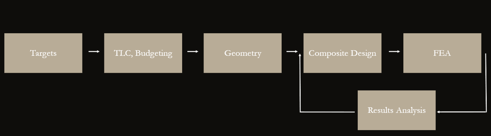
FEA Workflow
I used a systems approach to making the FEA models and Composite Design, in order to ensure that all top level constraints were apart of the picture. Started with Vehicle Dynamic's targets in compliance and loadcases. Then quickly moved ot make a TLC and considered budgeting and time constraints. The geometry of the rim was then designed, mainly to meet the requirements by Drivetrain's motor dimensions, and the Tires to be used in competition. Once geometry was frozen, the loop of Composite Design and FEA began, with the feedback including analyzing and interpreting results. This involved the decisions on how best to adjust the laminate orientation, thickness and staircases to provide the needed strength and reliability.
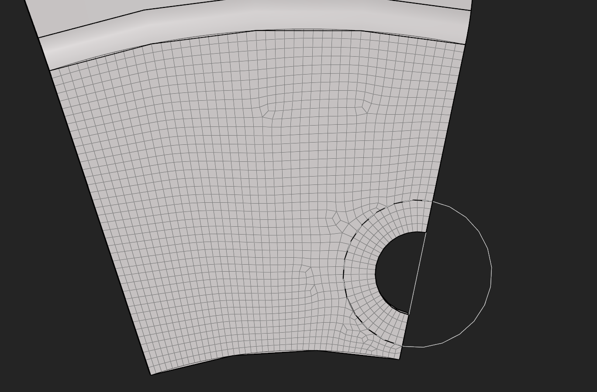
Rim Body Mesh
Once geometry was frozen via design in CATIA, creating a mesh was the first step towards a full linear model. As seen in the picture, the rim, which is rotationally symmetric, was simplified to its most basic repeating unit, where the mesh was made. There was a strong focus on maintaining the aspect ratio as close to 1 as possible to avoid artificial stress concentrations. Furthermore, via a literature study on rim mesh convergences, a mesh size of 1 mm squared was chosen, as it balanced computational expense with the needed accuracy.
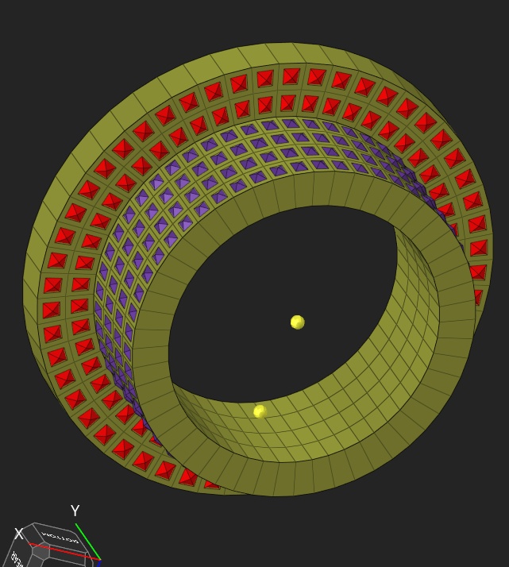
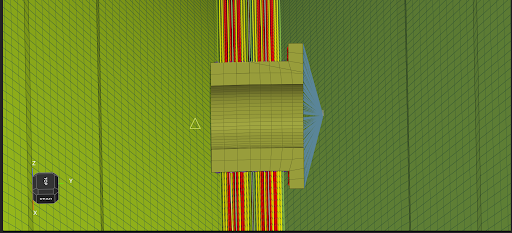
Insert Design
The next mesh to be made was the inserts, which were placed in the pickup points for the Drivetrain. This was done via 3D HEX elements, as opposed to the 2D elements used for the carbon fiber. The pyramids visible are the FREEZE Contacts applied to the elements to simulate the contact patch between the inserts and the surrounding carbon. The design of the inserts was likewise a feedback loop between observing the stresses from the FEA results, and adjusting the thickness of the walls accordingly. This was a crucial step, since the limiting stress concentrations were observed to always be around the inserts, where the composite displayed both the highest Tsai-Wu and Puck Failure values.
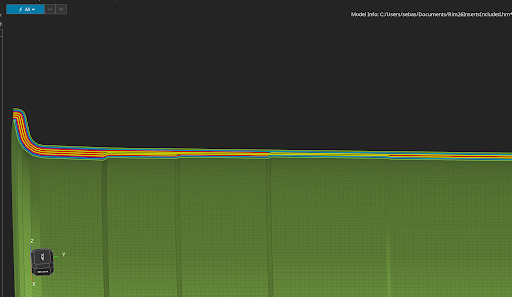
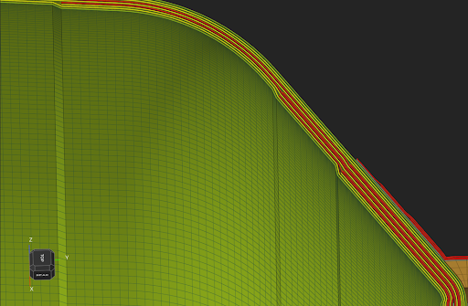
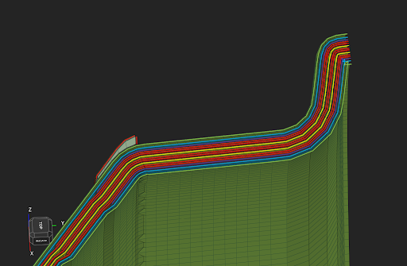
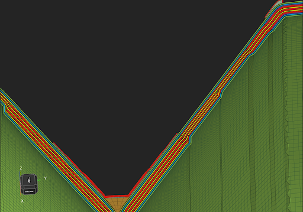
Laminate and Composite Design
The final layup was designed when all composite failure indices were within the established acceptable range. The limiting load-case was the front outer rim during a maximum velocity turn with maximum steering input. For Tsai-Wu it was to be below 0.6 at all points. Furthermore, compliance was to be below 5170.55, and an additional analysis on PUCK failure modes for the UD plies had an upper bound of 0.3. The plies in red are UD oriented in the axial, zero degree direction. The green are +-45 AS4C plies, the yellow are 0/90 AS4C plies and the purple plies are reinforcement patches along the flanges for the tire-mounting loadcase. Furthermore, the important practice of staircasing the plies was made, in order to avoid unnecessary stress concentrations. Making sure the ABD matrix of the laminate has a 0-valued B matrix was also important to avoid introducing unwanted coupling behavior.
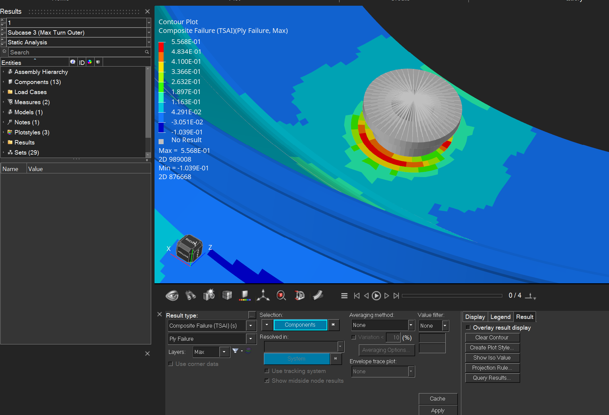
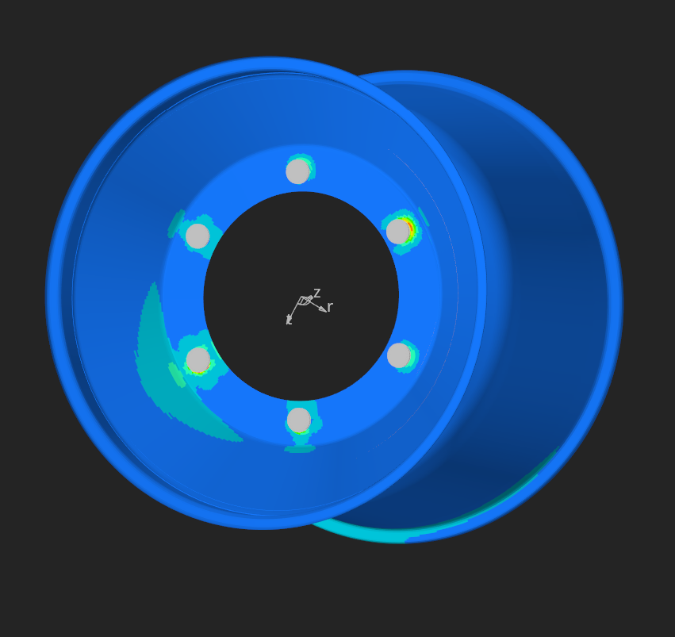
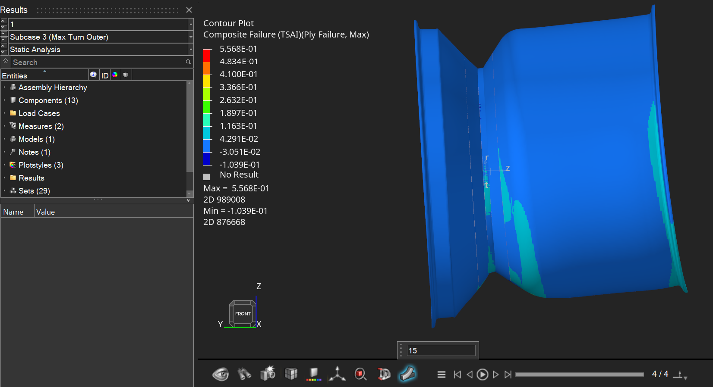
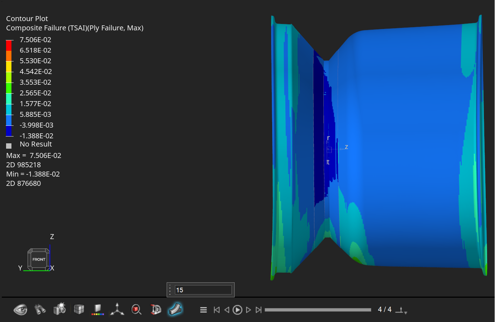
Analysis and Results
Some very beautiful views of Altair's Hyperview analysis tool, where the targets in CFI were tracked and iterated on. Here you can see the limiting stress concentration around the inserts. A 15x exaggerated view of the deformations under different load cases is also visible, which helped in aiding design for the compliance targets. Enjoy the clip below of me observing the Bump and Max Braking loadcase for the first time, with an exaggerated deflection factor of 50x.